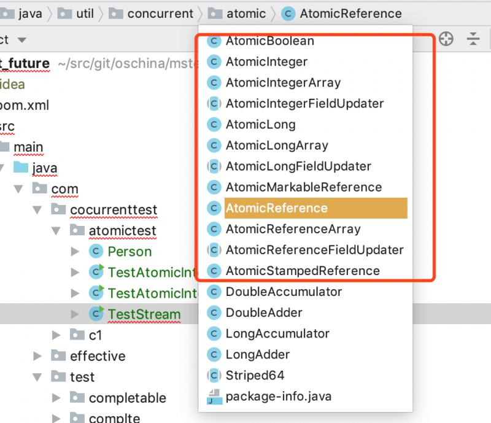
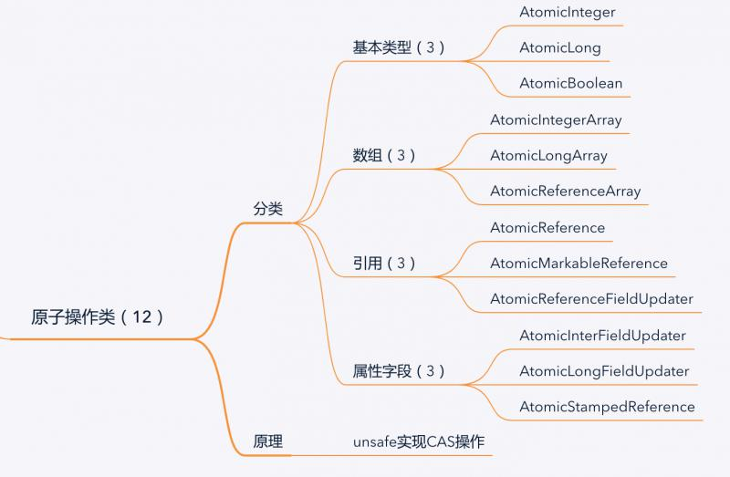
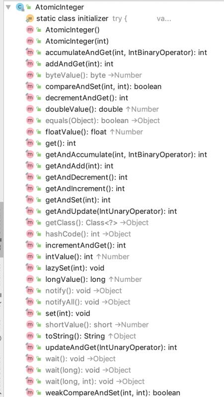
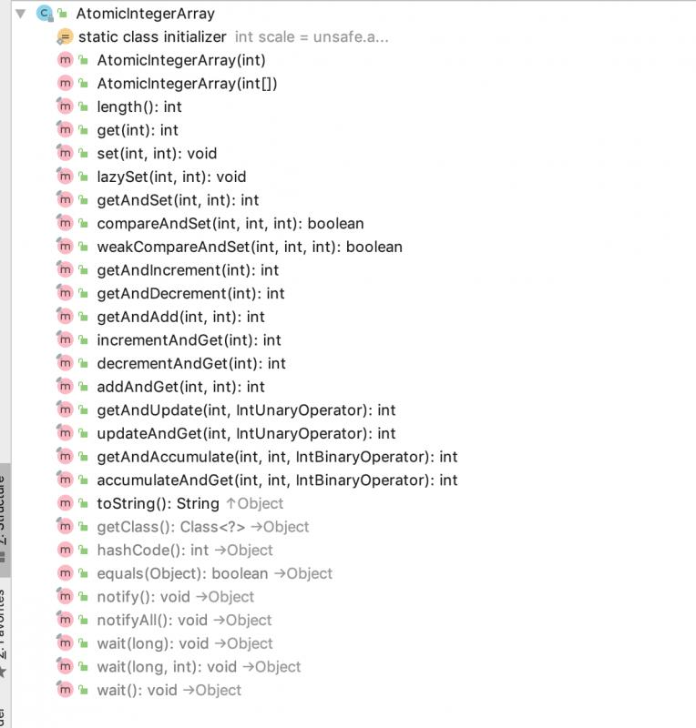
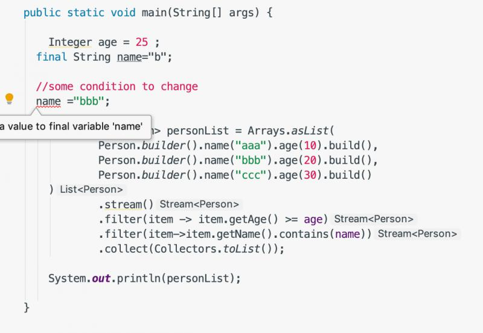

原文连接:https://www.cnblogs.com/snidget/p/11997310.html
背景
多线程更新变量的值，可能得不到预期的值，当然增加syncronized关键字可以解决线程并发的问题。
这里提供另外一种解决问题的方案，即位于 java.util.concurrent.atomic包下的原子操作类，提供了一种用法简单，性能高效，线程安全的更新变量的方式。

其它两个附带的类顺带看了一下：
LongAddr 多线程先的sum操作
LongAccomulator 多线程下的函数式操作，性能低于AtomicLong,主要是函数式的支持；
简单分类：

基本类型原子类
使用原子的方式更新基本类型，包括：
- AtomicBoolean
- AtomicInteger
- AtomicLong
核心方法：
直接看源码了。

类签名：
public class AtomicInteger extends Number implements java.io.Serializable {}
| 方法 | 功能说明 |
|---|---|
| 构造方法 | 两个构造方法，不传或者传入值 |
| get方法 | get()获取值；对应的有set(int)方法，layzySet(int) 懒设置 |
| getAndAdd(int) | 获得老值然后增加一个数字， 对应的有addAndGet(int)增加一个数字并返回新值 |
| getAndSet(int) | 获得老值然后更新为新值 |
| getAndIncreament() | 获得老值然后+1，对应的有increamentAndGet() +1然后返回新值 |
| getAndDecrement() | 获得老值然后-1 ，对应的有decrementAndGet() -1然后返回新值 |
| getAndUpdate(IntUnaryOperator) | 获取老值然后执行一个函数得到新值并设置，对应的有updateAndGet(IntUnaryOperator) 先执行内置函数式接口再返回新值 |
| getAndAccumulate(int,IntBinaryOperator) | 获取老值，然后把老值和第一个参数进行函数运算的返回值并设置 ，对应的有accumulateAndGet(int,IntBinaryOperator) 执行运算然后返回新值 |
| compareAndSet(int,int) | 对比如果跟预期值相等则设置为新值，对应的有weakCompareAndSet(int,int)这个是不保证顺序设置 |
| toString | 返回数字的字符串形式 |
| number继承过来的方法 | longValue(),byteValue()直接做了类型转换 |
| object继承过来的方法 | 直接沿用Object的方法 |
底层是基于 unsafe来实现，基于CAS来原子性；
来研究一下unsafe的实现源码：
/**
* Atomically decrements by one the current value.
*
* @return the previous value
*/
public final int getAndDecrement() {
return unsafe.getAndAddInt(this, valueOffset, -1);
}public final int getAndAddInt(Object var1, long var2, int var4) {
int var5;
do {
var5 = this.getIntVolatile(var1, var2);
} while(!this.compareAndSwapInt(var1, var2, var5, var5 + var4));
return var5;
}大致的处理流程是：死循环，对比； 也就是CAS；
利用了volatile的特性，多线程的变量可见性；
原子数组
通过原子的方式更新数组中的某个元素；
包含3个类：
- AtomicIntegerArray
- AtomicIntegerLongArray
- AtomicReferenceArray
抓一个类来分析研究一下：
public class AtomicIntegerArray implements java.io.Serializable {}

| 方法 | 说明 |
|---|---|
| 构造方法 | public AtomicIntegerArray(int length)，public AtomicIntegerArray(int[] array)这里会做一个clone,不影响传入的数组的值 |
| length | 得到内部数组的长度 |
| get,set,layziset | 获取，设置，懒设置 |
| compareAndSet,weakCompareAndSet | CAS操作， weak方法不保证操作的顺序性 |
| getAndAdd,getAndUpdate,getAndAccumulate | 有反向的方法，就是先计算，然后返回新值 |
| toString | 打印出数组【数字1，数字2】 |
原子类型的操作比较特殊一点：
/**
* Atomically adds the given value to the element at index {@code i}.
*
* @param i the index
* @param delta the value to add
* @return the previous value
*/
public final int getAndAdd(int i, int delta) {
return unsafe.getAndAddInt(array, checkedByteOffset(i), delta);
}
private long checkedByteOffset(int i) {
if (i < 0 || i >= array.length)
throw new IndexOutOfBoundsException("index " + i);
return byteOffset(i);
}
private static long byteOffset(int i) {
return ((long) i << shift) + base;
}这块获取数组中的值时候用到了一个移位操作；
更新引用
原子更新类AtomicInterger只能更新一个变量，如果要更新多个不同的变量就要用到原子更新引用 类型提供的类；
- AtomicReference 更新引用类型
- AtomicReferenceFieldUpdater 更新引用类型的字段
- AtomicMarkableRerence 更新带有标志位的引用类型
以AtomicReference为例子：
签名：public class AtomicReference
方法：

| 方法 | 说明 |
|---|---|
| 构造方法 | public AtomicReference(V initialValue) 带初始值；public AtomicReference() |
| get,set,lazySet | 设置，获取，懒设置 |
| compareAndSet,weakCompareAndSet | CAS操作，weak方法不保证顺序 |
| getAndSet,getAndUpdate,getAndAccumulate | 有反向的操作 |
| toString | 打印出里面的对象 |
底层分析：
/**
* Atomically sets to the given value and returns the old value.
*
* @param newValue the new value
* @return the previous value
*/
@SuppressWarnings("unchecked")
public final V getAndSet(V newValue) {
return (V)unsafe.getAndSetObject(this, valueOffset, newValue);
}利用了unsafe提供的特性保证了原子操作；
原子更新字段
需要原子的更新某个类的某个字段，需要用到原子更新字段类；
- AtomicIntegerFiledUpdater 不用多说，原子更新类的Interger字段
- AtomicLongFieldUpdater 不用多说，原子更新类的Long字段
- AtomicStampedReference 原子更新带版本号的引用类型，可以原子的更新引用和引用的版本号，解决ABA问题；
使用要点：
- 每次必须使用静态方法 newUpdater创建一个更新器，设置类和属性；
- 更新的类的属性必须使用 public volatile修饰；
package com.cocurrenttest.atomictest;
import lombok.AllArgsConstructor;
import lombok.Builder;
import lombok.Data;
import lombok.NoArgsConstructor;
/**
* 说明：人实体
* @author carter
* 创建时间： 2019年12月06日 19:27
**/
@Data
@NoArgsConstructor
@AllArgsConstructor
@Builder
public class Person {
private String name;
//注意，只能是int,Integer会报错哦
public volatile int age;
}
package com.cocurrenttest.atomictest;
import java.util.concurrent.atomic.AtomicIntegerFieldUpdater;
/**
* 说明：TODO
* @author carter
* 创建时间： 2019年12月06日 19:26
**/
public class TestAtomicIntegerUpdater {
public static void main(String[] args) {
final AtomicIntegerFieldUpdater<Person> personAtomicIntegerFieldUpdater = AtomicIntegerFieldUpdater.newUpdater(Person.class, "age");
Person person = Person.builder().name("lifuchun").age(30).build();
personAtomicIntegerFieldUpdater.addAndGet(person,1);
final int age = personAtomicIntegerFieldUpdater.get(person);
System.out.println(age);
assert age==31 : "更新失败";
}
}
小结
原子操作类都介绍了一下，适当的场景的话，简单的说一下我使用过的两个场景：
- 多任务去数据copy的时候的对账，计算出总的修改行数，或者迁移的订单总金额，方便两边对比；
- 流式操作的lambda表达式里面需要传入的局部变量为final,但是 一般的类型在方法中不是final的，还需要在中间过程中修改，IDE提示可以使用原子类包装，然后带上final去修改；

package com.cocurrenttest.atomictest;
import java.util.Arrays;
import java.util.List;
import java.util.concurrent.atomic.AtomicReference;
import java.util.stream.Collectors;
/**
* 说明：TODO
* @author carter
* 创建时间： 2019年12月06日 19:36
**/
public class TestStream {
public static void main(String[] args) {
Integer age = 25 ;
final String name="b";
//some condition to change
name ="bbb";
final List<Person> personList = Arrays.asList(
Person.builder().name("aaa").age(10).build(),
Person.builder().name("bbb").age(20).build(),
Person.builder().name("ccc").age(30).build()
)
.stream()
.filter(item -> item.getAge() >= age)
.filter(item->item.getName().contains(name))
.collect(Collectors.toList());
System.out.println(personList);
}
public static void main2(String[] args) {
Integer age = 25 ;
final AtomicReference<String> name=new AtomicReference<>("b");
//some condition to change
name.set("bbb");;
final List<Person> personList = Arrays.asList(
Person.builder().name("aaa").age(10).build(),
Person.builder().name("bbb").age(20).build(),
Person.builder().name("ccc").age(30).build()
)
.stream()
.filter(item -> item.getAge() >= age)
.filter(item->item.getName().contains(name.get()))
.collect(Collectors.toList());
System.out.println(personList);
}
}
原创不易，转载请注明出处。